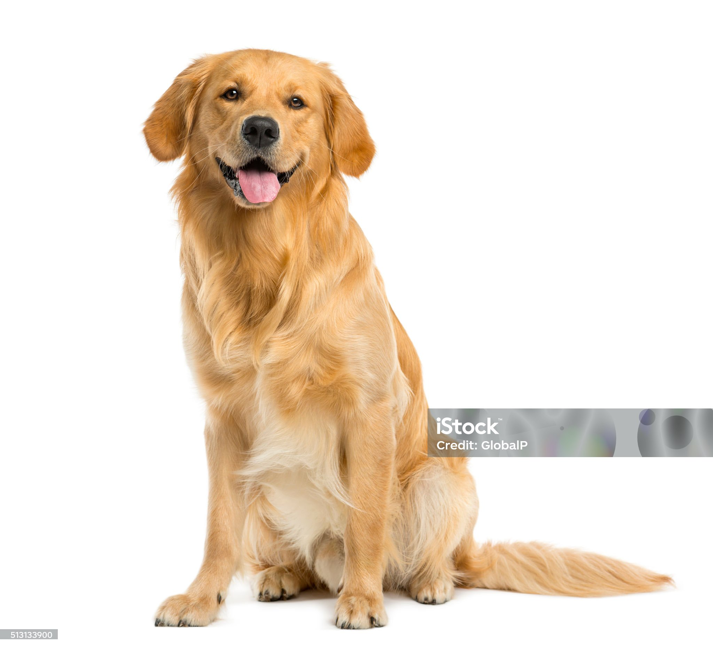

Собаки
Собаки – одни из самых популярных домашних животных. Они известны своей лояльностью и преданностью. Собаки бывают различных пород, каждая из которых обладает уникальными характеристиками. Они требуют регулярного ухода, прогулок и тренировок.
Популярные породы собак: лабрадор-ретривер, немецкая овчарка, бигль, йоркширский терьер.
Кошки
Кошки – независимые и грациозные животные, которые отлично подходят для проживания в квартирах. Они требуют меньше ухода по сравнению с собаками, но также нуждаются в внимании и ласке. Кошки известны своей чистоплотностью и умением охотиться на мелких грызунов.
Популярные породы кошек: британская короткошёрстная, сиамская, мейн-кун, персидская кошка.
Птицы
Птицы – это домашние животные, которые могут привнести в ваш дом яркие краски и мелодичное пение. Они требуют меньшего пространства, чем кошки и собаки, но нуждаются в специальном уходе, правильном питании и общении.
Популярные виды домашних птиц: волнистый попугайчик, канарейка, неразлучник, корелла.
Рыбки
Рыбки – это одни из самых спокойных домашних животных. Они могут быть прекрасным дополнением к интерьеру вашего дома и обеспечивают расслабляющий эффект своим присутствием. Однако они требуют специального оборудования, такого как аквариум, фильтры и обогреватели, а также регулярного ухода и кормления.
Популярные виды рыбок: золотая рыбка, гуппи, меченосец, неон.
Рептилии
Рептилии – это экзотические домашние животные, которые требуют специального ухода и оборудования. Они могут стать интересными питомцами для тех, кто любит необычных животных. Важно обеспечить рептилиям подходящие условия обитания, такие как террариум с правильной температурой и влажностью.
Популярные виды рептилий: игуаны, змеи, ящерицы, черепахи.